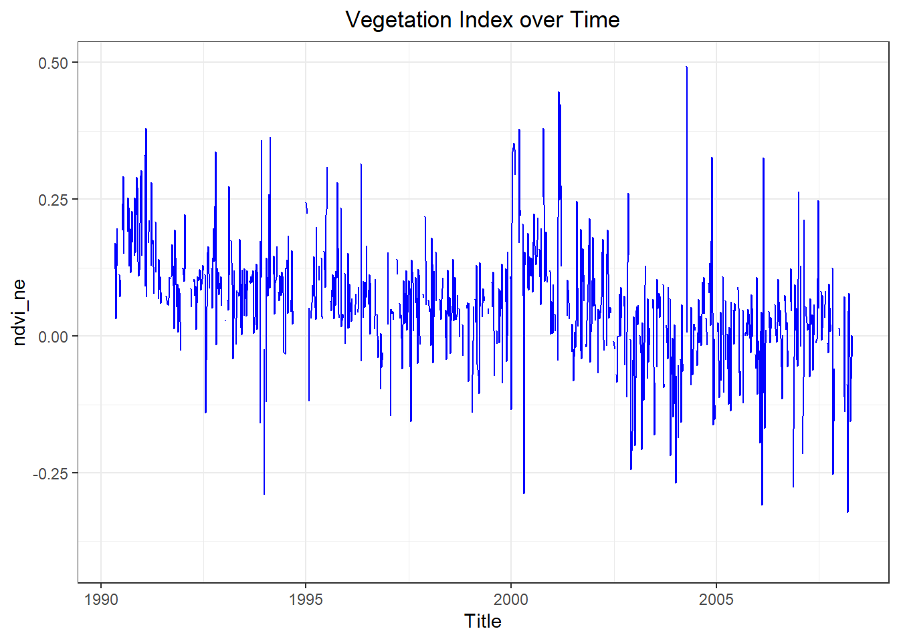
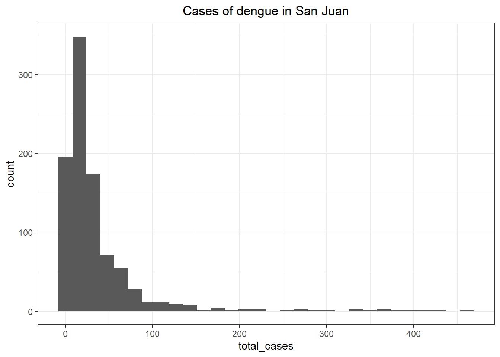
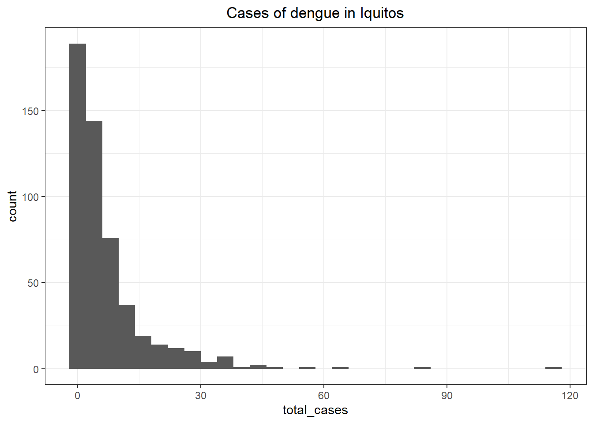
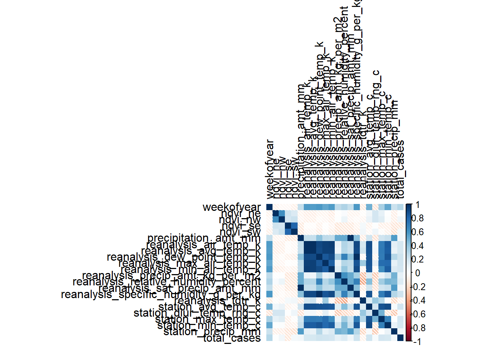
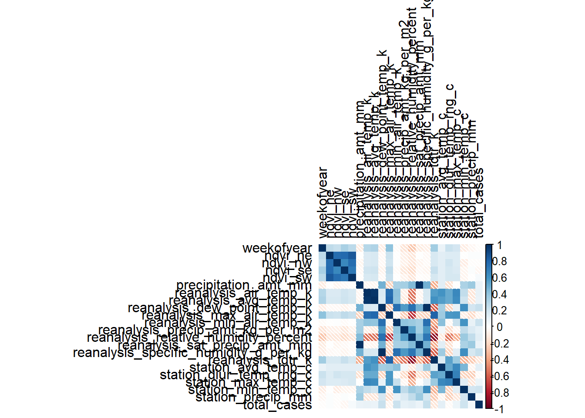
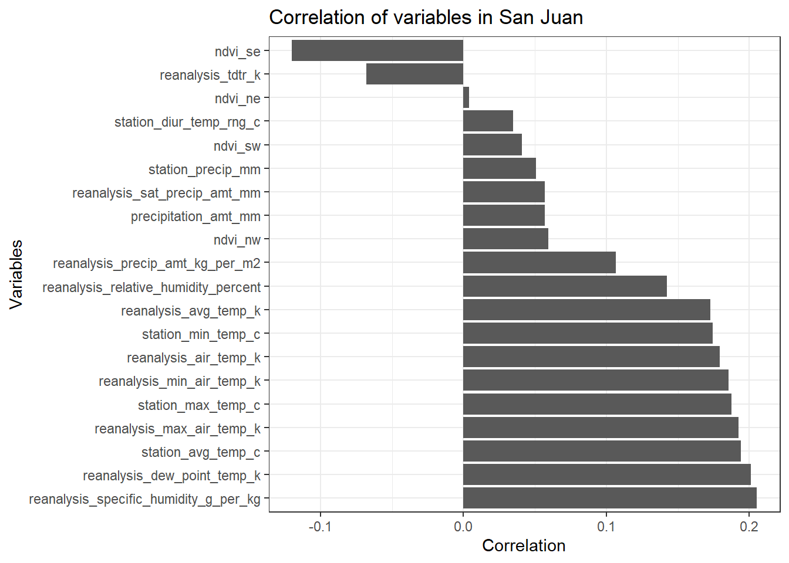
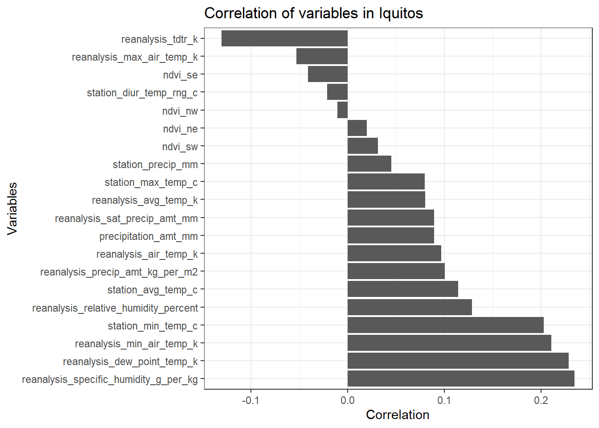
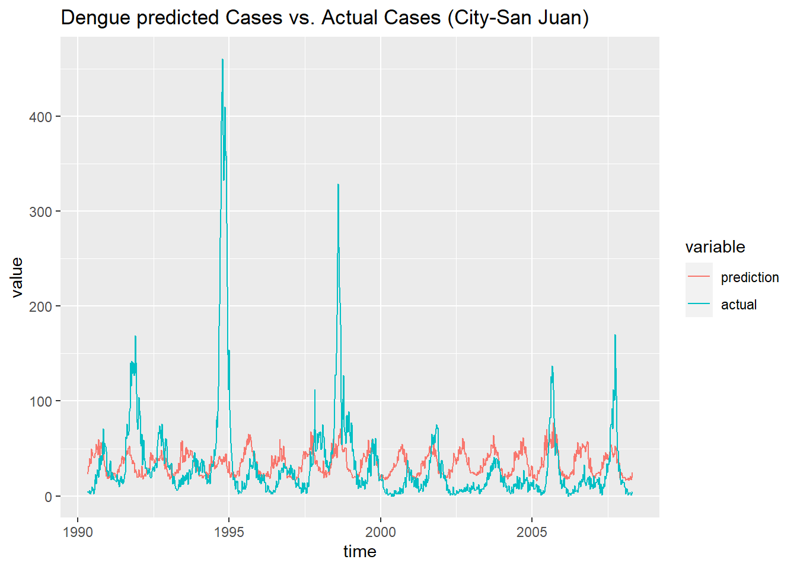
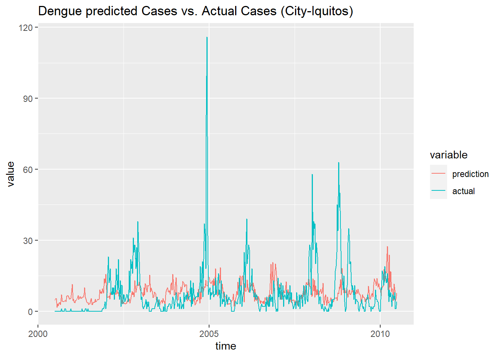

# Load of libraries
library(tidyverse)
library(zoo)
library(corrplot)
library(MASS)
library(reshape2)Recently, I discovered a new website about competitions that it is not called Kaggle! Its name is Drivendata.
DrivenData offers different competitions related with multiple types of field, such as health (oh yes!), ecology, society… with a common element: to face the world’s biggest social challenges.
I decided to join my first competition called ‘DengAI: Predicting Disease Spread’. In this case, the user receives a set of weather information (temperatures, precipitations, vegetations) from two cities: San Juan (Puerto Rico) and Iquitos (Peru) with total cases of dengue by year and week of every year.

The goal of the competition is to develop a prediction model that would be able to anticipate the cases of dengue in every city depending on a set of climate variables.
The DrivenData’s blog wrote some days ago, a post about a fast approach with this dataset. It was written in Python. So, I decided to “translate” to R language.
The next code is divided into three main points:
1. Code with clean tasks (transform NA values, remove of columns…) and exploratory analyses.
2. Function with every step during cleaning of data.
3. Development of model, prediction and comparison of predicted vs real total cases detected.
# Load data
train_features <- read.csv('data/dengue_features_train.csv')
train_labels <- read.csv('data/dengue_labels_train.csv')
test_features <- read.csv('data/dengue_features_test.csv')
submission_format <- read.csv('data/submission_format.csv')
# Filter of data by city
sj_train_labels <- filter(train_labels, city == 'sj')
sj_train_features <- filter(train_features, city == 'sj')
iq_train_labels <- filter(train_labels, city == 'iq')
iq_train_features <- filter(train_features, city == 'iq')# Is there NA values?
df_na_sj <- as.data.frame(apply(sj_train_features,2, function(x) any(is.na(x))))
colnames(df_na_sj) <- 'is_there_NA'
df_na_sj$number_NA <- apply(sj_train_features,2, function(x) sum(is.na(x)))
df_na_sj$mean_NA <- apply(sj_train_features, 2, function(x) mean(is.na(x)))
df_na_iq <- as.data.frame(apply(iq_train_features, 2, function(x) any(is.na(x))))
colnames(df_na_iq) <- 'is_there_NA'
df_na_iq$number_NA <- apply(iq_train_features, 2, function(x) sum(is.na(x)))
df_na_iq$mean_NA <- apply(iq_train_features, 2, function(x) mean(is.na(x)))# Vegetation Index over Time Plot with NAs
ggplot(sj_train_features, aes(x = as.Date(week_start_date), y = ndvi_ne )) +
ggtitle('Vegetation Index over Time') +
theme_bw() +
xlab('Title') +
geom_line(na.rm = FALSE, color = 'blue') +
theme(plot.title = element_text(hjust = 0.5))
# Remove 'weekofyear' column
sj_train_features <- dplyr::select(sj_train_features, -week_start_date)
iq_train_features <- dplyr::select(iq_train_features, -week_start_date)
# Fill the NA values with the previous value
sj_train_features <- sj_train_features %>%
do(na.locf(.))
iq_train_features <- iq_train_features %>%
do(na.locf(.))
# Distribution of labels
# print(mean(sj_train_labels$total_cases))
# print(var(sj_train_labels$total_cases))
#
# print(mean(iq_train_labels$total_cases))
# print(var(iq_train_labels$total_cases))
ggplot(sj_train_labels, aes(x = total_cases)) +
theme_bw() +
ggtitle('Cases of dengue in San Juan') +
geom_histogram() +
theme(plot.title = element_text(hjust = 0.5))
ggplot(iq_train_labels, aes(x = total_cases)) +
theme_bw() +
ggtitle('Cases of dengue in Iquitos') +
geom_histogram() +
theme(plot.title = element_text(hjust = 0.5))
# Add total_cases column to *_train_features dataframes
# sj_train_features <- left_join(sj_train_features, sj_train_labels, by = c('city', 'year', 'weekofyear'))
sj_train_features$total_cases <- sj_train_labels$total_cases
# iq_train_features <- left_join(iq_train_features, iq_train_labels, by = c('city', 'year', 'weekofyear'))
iq_train_features$total_cases <- iq_train_labels$total_cases
# Correlation matrix
m_sj_train_features <- data.matrix(sj_train_features)
m_sj_train_features <- cor(x = m_sj_train_features[,3:24], use = 'complete.obs', method = 'pearson')
m_iq_train_features <- data.matrix(iq_train_features)
m_iq_train_features <- cor(x = m_iq_train_features[,3:24], use = 'everything', method = 'pearson')
# Correlation Heatmap
corrplot(m_sj_train_features, type = 'full', tl.col = 'black', method="shade")
corrplot(m_iq_train_features, type = 'full', tl.col = 'black', method = 'shade')
# Correlation Bar plot
df_sj_train_features <- data.frame(m_sj_train_features)[2:21,]
df_sj_train_features <- dplyr::select(df_sj_train_features, total_cases)
df_iq_train_features <- data.frame(m_iq_train_features)[2:21,]
df_iq_train_features <- dplyr::select(df_iq_train_features, total_cases)
ggplot(df_sj_train_features, aes(x= reorder(rownames(df_sj_train_features), -total_cases), y = total_cases)) +
geom_bar(stat = 'identity') +
theme_bw() +
ggtitle('Correlation of variables in San Juan') +
ylab('Correlation') +
xlab('Variables') +
coord_flip()
ggplot(df_iq_train_features, aes(x= reorder(rownames(df_sj_train_features), -total_cases), y = total_cases)) +
geom_bar(stat = 'identity') +
theme_bw() +
ggtitle('Correlation of variables in Iquitos') +
ylab('Correlation') +
xlab('Variables') +
coord_flip()
# Function data cleaning
data_clean <- function(df_dengue_features, df_dengue_labels = NULL, add_cases = TRUE) {
# Filter by city
sj_df_dengue_features <- filter(df_dengue_features, city == 'sj')
iq_df_dengue_features <- filter(df_dengue_features, city == 'iq')
if (add_cases == TRUE) {
sj_df_dengue_labels <- filter(df_dengue_labels, city == 'sj')
iq_df_dengue_labels <- filter(df_dengue_labels, city == 'iq')
}
# Removing week_start_date column
sj_df_dengue_features <- dplyr::select(sj_df_dengue_features, -week_start_date)
iq_df_dengue_features <- dplyr::select(iq_df_dengue_features, -week_start_date)
# Fill of NA values with the previous value
sj_df_dengue_features <- sj_df_dengue_features %>%
do(na.locf(.))
iq_df_dengue_features <- iq_df_dengue_features %>%
do(na.locf(.))
# Add total_cases to dataframe with features
if (add_cases == TRUE) {
sj_df_dengue_features$total_cases <- sj_df_dengue_labels$total_cases
iq_df_dengue_features$total_cases <- iq_df_dengue_labels$total_cases
}
# Converting character columns into numbers
sj_df_dengue_features <- as.data.frame(apply(sj_df_dengue_features,2,as.numeric))
sj_df_dengue_features$city <- rep('sj', nrow(sj_df_dengue_features))
iq_df_dengue_features <- as.data.frame(apply(iq_df_dengue_features,2,as.numeric))
iq_df_dengue_features$city <- rep('iq', nrow(iq_df_dengue_features))
result <- list(sj_df_dengue_features, iq_df_dengue_features )
return(result)
}# Getting data_training clean
data_train <- data_clean(train_features, train_labels, TRUE)
# Getting negative binomials models by city
training_sj <- glm.nb(formula = total_cases ~ reanalysis_specific_humidity_g_per_kg +
reanalysis_dew_point_temp_k +
station_min_temp_c +
station_avg_temp_c, data = data_train[[1]])
training_iq <- glm.nb(formula = total_cases ~ reanalysis_specific_humidity_g_per_kg +
reanalysis_dew_point_temp_k +
station_min_temp_c +
station_avg_temp_c, data = data_train[[2]])
# Getting data_test clean
data_test <- data_clean(test_features, add_cases = FALSE)
# Testing model with training data
prediction_train_sj <- predict(training_sj, data_train[[1]], type = 'response')
prediction_train_iq <- predict(training_iq, data_train[[2]], type = 'response')
df_prediction_train_sj <- data.frame('prediction' = prediction_train_sj, 'actual' = data_train[[1]]$total_cases,
'time' = as.Date(train_features$week_start_date[1:936]))
df_prediction_train_sj <- melt(df_prediction_train_sj, id.vars = 'time')
ggplot(df_prediction_train_sj, aes(x = time, y = value, color = variable)) +
geom_line() +
ggtitle('Dengue predicted Cases vs. Actual Cases (City-San Juan) ')
df_prediction_train_iq <- data.frame('prediction' = prediction_train_iq, 'actual' = data_train[[2]]$total_cases,
'time' = as.Date(train_features$week_start_date[937:1456]))
df_prediction_train_iq <- melt(df_prediction_train_iq, id.vars = 'time')
ggplot(df_prediction_train_iq, aes(x = time, y = value, color = variable)) +
geom_line() +
ggtitle('Dengue predicted Cases vs. Actual Cases (City-Iquitos) ')
# Prediction of total_cases in the data set
prediction_sj <- predict(training_sj, data_test[[1]], type = 'response')
prediction_iq <- predict(training_iq, data_test[[2]], type = 'response')
data_prediction_sj <- data.frame('city' = rep('sj', length(prediction_sj) ),
'total_cases' = prediction_sj,
'weekofyear' = data_test[[1]]$weekofyear,
'year' = data_test[[1]]$year )
data_prediction_iq <- data.frame('city' = rep('iq', length(prediction_iq) ),
'total_cases' = prediction_iq,
'weekofyear' = data_test[[2]]$weekofyear,
'year' = data_test[[2]]$year)
submission_format$total_cases <- as.numeric(c(data_prediction_sj$total_cases,
data_prediction_iq$total_cases))
submission_format$total_cases <- round(submission_format$total_cases, 0)
write.csv(submission_format,
file = 'submission_format_submit.csv', row.names = F)